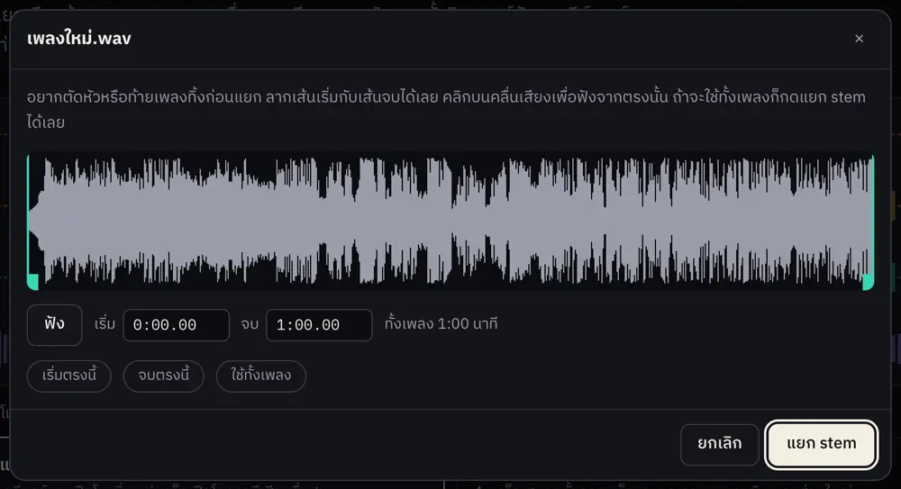
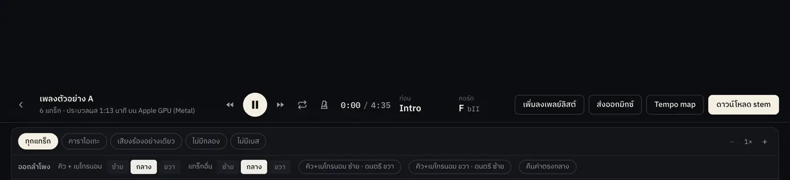
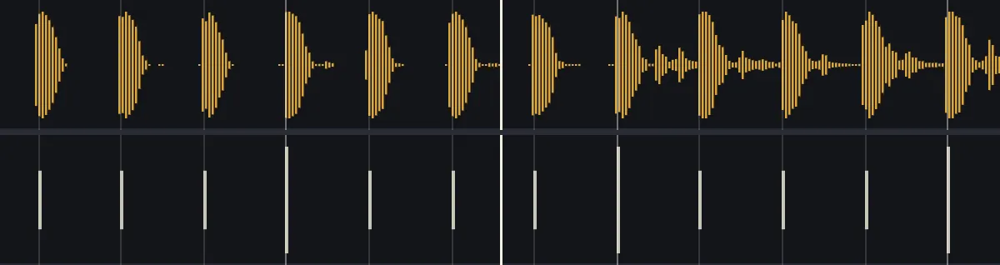
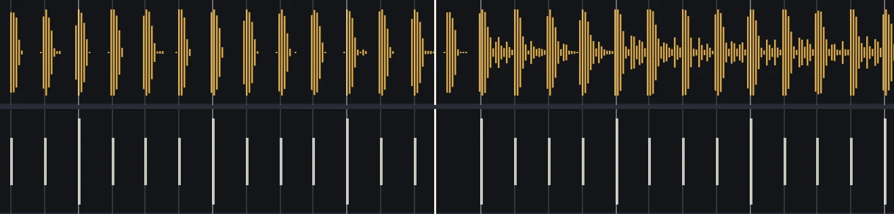
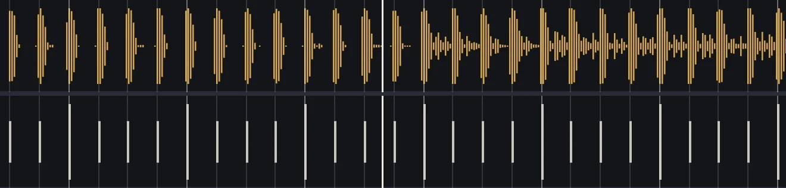

คู่มือ Prism
Prism คือโปรแกรมเตรียม data สำหรับเล่นสด ใช้ AI แยกเพลงเป็นแทร็ก (ร้อง กลอง เบส กีตาร์ เปียโน อื่นๆ) วิเคราะห์จังหวะ คีย์ คอร์ด และท่อนเพลง ทำแทร็กคลิกที่แก้ได้ละเอียด ใส่เสียงบอกท่อน แล้วส่งออกไปใช้ใน DAW หรือเล่นบนเวทีด้วยเพลย์ลิสต์ของ Prism เอง
ทุกอย่างทำงานในเครื่อง Mac ของคุณ ไฟล์เพลงไม่ถูกส่งออกไปไหน
- macOS · Apple Silicon
- ใช้ผ่านเบราว์เซอร์
- ภาพในคู่มือใช้เพลงตัวอย่าง
Phase 1
เริ่มต้นใช้งาน: จากไฟล์เพลงถึงหน้าเพลง
ส่วนนี้พาตั้งแต่เปิดโปรแกรมครั้งแรก นำเข้าเพลง รอ AI แยกเสียง จนถึงรู้ว่าแต่ละส่วนของหน้าเพลงทำอะไร เมื่อจบ phase นี้คุณจะได้ stem ของเพลงแรกและส่งออกไปใช้ได้
1. ติดตั้งและเปิด Prism
สิ่งที่ต้องมี: Mac ชิป Apple (M1 ขึ้นไป), Python 3.10–3.12 และอินเทอร์เน็ตตอนเปิดครั้งแรก
- ถ้ายังไม่มี Python ให้ติดตั้งก่อน วิธีที่ง่ายคือใช้ Homebrew พิมพ์ใน Terminal ว่า
brew install python@3.12 - ดาวน์โหลดโฟลเดอร์ Prism มาไว้ในเครื่อง แล้วดับเบิลคลิก
start.command - ครั้งแรกจะเปิดหน้าต่าง Terminal และติดตั้งของที่ต้องใช้เอง ใช้เวลาหลายนาที เสร็จแล้วเบราว์เซอร์จะเปิดหน้า Prism ให้ที่
http://127.0.0.1:8765 - ครั้งต่อไปดับเบิลคลิก
start.commandได้เลย เปิดเร็วกว่ามาก
start.command ใหม่start.command แล้วเลือก "เปิด" (Open) หนึ่งครั้ง ครั้งต่อไปดับเบิลคลิกได้ตามปกติ2. หน้าแรก
หน้าแรกคือที่นำเข้าเพลงใหม่ และเปิดเพลงที่แยกไว้แล้ว
- 1ช่องวางไฟล์ ลากไฟล์เพลงมาวาง หรือคลิกเพื่อเลือกไฟล์ รองรับ MP3, WAV, FLAC, M4A, AAC, OGG, AIFF และไฟล์วิดีโอ MP4/MOV (ใช้เฉพาะเสียง) ขนาดไม่เกิน 1 GB
- 2เลือกโมเดล เลือกก่อนวางไฟล์ (ดูตารางด้านล่าง)
- 3เพลงของคุณ คลิกชื่อเพลงเพื่อเปิด ช่องค้นหาด้านบนค้นได้ทั้งชื่อเพลง คีย์ และ BPM ปุ่ม "ลบ" จะย้ายเพลงไปถังขยะ (กู้คืนได้ 7 วัน ดูใน Phase 4)
- 4เพลย์ลิสต์ ไปหน้าเพลย์ลิสต์สำหรับเล่นต่อกันบนเวที (Phase 4)
| โมเดล | ได้แทร็กอะไร | ความเร็ว | ใช้เมื่อ |
|---|---|---|---|
| 6 แทร็ก | ร้อง กลอง เบส กีตาร์ เปียโน อื่นๆ | เร็ว | ค่าเริ่มต้น เหมาะกับงาน data ส่วนใหญ่ (แทร็กเปียโนอาจมีเสียงอื่นปน) |
| มาตรฐาน | ร้อง กลอง เบส อื่นๆ | เร็ว | ไม่ต้องแยกกีตาร์กับเปียโน |
| คุณภาพสูงสุด | ร้อง กลอง เบส อื่นๆ | ช้าราว 4 เท่า | อยากได้เสียงสะอาดที่สุด (อยู่ใน "ตัวเลือกเพิ่มเติม") |
| เสียงร้องหลัก + คอรัส | ร้องนำ คอรัส กลอง เบส อื่นๆ | ช้าราว 4 เท่า | ต้องแยกเสียงร้องนำออกจากคอรัส ครั้งแรกโหลดโมเดลเพิ่ม 913 MB |
3. นำเข้าเพลง
- เลือกโมเดลที่หน้าแรก
- ลากไฟล์เพลงมาวางในช่องวางไฟล์ (หรือคลิกแล้วเลือกไฟล์)
- หน้าต่างเลือกช่วงจะขึ้นมา ถ้าจะใช้ทั้งเพลง กด แยก stem ได้เลย ถ้าอยากตัดหัวหรือท้ายทิ้ง (เช่นเสียงพูดก่อนเพลงในคลิปแสดงสด) ทำตามขั้นถัดไป
- ลากเส้นสีเขียวด้านซ้ายไปจุดที่อยากให้เริ่ม และเส้นด้านขวาไปจุดที่อยากให้จบ ส่วนที่ถูกตัดจะมืดลง แล้วกด แยก stem เฉพาะช่วงนี้
- 1เส้นเริ่ม ลากไปทางขวาเพื่อตัดหัวเพลง
- 2เส้นจบ ลากไปทางซ้ายเพื่อตัดท้ายเพลง
- 3ฟัง เล่นช่วงที่เลือก คลิกบนคลื่นเสียงตรงไหนก็ได้เพื่อฟังจากตรงนั้น
- 4พิมพ์เวลา ใส่จุดเริ่มหรือจุดจบเองได้ละเอียด เช่น
0:12.5ปุ่ม เริ่มตรงนี้ / จบตรงนี้ ตั้งจุดตรงที่กำลังฟังอยู่ ส่วน ใช้ทั้งเพลง ล้างการตัด - 5แยก stem เริ่มแยกเสียง (ถ้าตัดช่วงไว้ ปุ่มจะเปลี่ยนเป็น "แยก stem เฉพาะช่วงนี้")

ภาพเคลื่อนไหวไฟล์ต้นฉบับถูกเก็บไว้ทั้งก้อนเสมอ การตัดมีผลแค่เสียงที่ส่งให้ AI แยก หน้าเพลงจะบอกไว้ใต้ชื่อเพลงว่าใช้ช่วงไหนของไฟล์
4. รอแยกเสียง
หลังกดแยก stem จะเห็นหน้าความคืบหน้า มี 4 ขั้น: อ่านไฟล์ → โหลดโมเดล → แยก stem → วิเคราะห์ เสร็จแล้วจะเปิดหน้าเพลงให้เอง
| เครื่อง | เพลง 4 นาที (6 แทร็ก) |
|---|---|
| MacBook Pro M3 Pro | ราว 30 วินาที – 1 นาที |
| M1 / M2 RAM 8 GB | นานกว่านี้หลายเท่า |
5. รู้จักหน้าเพลง
หน้าเพลงคือที่ทำงานหลัก แบ่งเป็นแถบควบคุมด้านบน ข้อมูลเพลง และมิกเซอร์กับไทม์ไลน์
- 1ปุ่มเล่น ถัดไปเป็นปุ่มย้อน/ข้าม 5 วินาที, วนลูป (เลือกช่วงบนไทม์ไลน์แล้วเล่นวน) และปุ่มเมโทรนอมเปิดปิดเสียงคลิก
- 2เวลา ตำแหน่งที่เล่นอยู่ / ความยาวเพลง
- 3ท่อนและคอร์ดตอนนี้ เปลี่ยนตามตำแหน่งที่เล่น พร้อมเลขโรมันเทียบกับคีย์
- 4เพิ่มลงเพลย์ลิสต์ · ส่งออกมิกซ์ · Tempo map ส่งเพลงไปเพลย์ลิสต์ (Phase 4), บันทึกเสียงที่ได้ยินอยู่เป็นไฟล์เดียว, ดาวน์โหลดไฟล์ MIDI ความเร็วสำหรับ DAW (Phase 2)
- 5ดาวน์โหลด stem ZIP ของทุกแทร็ก (ดูหัวข้อถัดไป)
- 6ข้อมูลเพลง ความเร็ว (BPM), คีย์, อัตราจังหวะ, ความดัง (LUFS) และโครงสร้าง ถ้าเพลงช้าเร็วไม่เท่ากันจะบอกจำนวนช่วงและช่วงความเร็ว
- 1พรีเซ็ตการฟัง สลับเร็วๆ ระหว่างทุกแทร็ก, คาราโอเกะ (ไม่มีเสียงร้อง), เสียงร้องอย่างเดียว, ไม่มีกลอง, ไม่มีเบส
- 2ออกลำโพงซ้าย-ขวา ส่งคิวกับเมโทรนอมไปข้างหนึ่ง ดนตรีไปอีกข้าง (เช่นคลิกเข้าหูฟัง in-ear ข้างเดียว) แทร็กที่ส่งไปข้างเดียวจะถูกรวมเป็นโมโนโดยไม่เบาลง
- 3แถบเครื่องมือแก้ไข ช่วงนับก่อนเพลง, ทำคลิกให้นิ่ง, ล็อกความเร็ว, แก้เมโทรนอม, เพิ่มเสียงจากไฟล์, cue อธิบายละเอียดใน Phase 2 และ 3
- 4ปุ่มของแต่ละแทร็ก M ปิดเสียง, S ฟังแทร็กนี้อย่างเดียว (โซโล่), ลูกศรลงคือดาวน์โหลดแทร็กนี้แทร็กเดียว
- 5ความดังและลำโพง เลื่อน fader เพื่อปรับความดัง (ตัวเลขเป็น dB) ปุ่ม L C R เลือกว่าแทร็กนี้ออกซ้าย กลาง หรือขวา ค่าลำโพงจำไว้ต่อเพลง
- 6ไทม์ไลน์ แถวบนสุดคือเวลา ท่อนเพลง คอร์ด และความเร็ว คลิกตรงไหนก็เล่นจากตรงนั้น คลิกชื่อท่อนเพื่อกระโดดไปท่อนนั้น ซูมด้วยปุ่ม − / + มุมขวา

ภาพเคลื่อนไหว| คีย์ลัดในหน้าเพลง | ทำอะไร |
|---|---|
| Space | เล่น / หยุด |
| ← → | ย้อน / ข้าม 5 วินาที |
| L | เปิดปิดการวนลูป |
| C | เปิดปิดเสียงเมโทรนอม |
6. ส่งออกเบื้องต้น
ส่งออกได้ 3 แบบ ทุกไฟล์ยาวเท่ากันหมด ลากเข้า DAW แล้ววางที่ตำแหน่ง 0 ทุกแทร็กจะตรงกันทันที
| ปุ่ม | ได้อะไร |
|---|---|
| ดาวน์โหลด stem | ไฟล์ ZIP ชื่อตามเพลง ข้างในเป็นไฟล์ WAV ตั้งชื่อตามเครื่องดนตรี (drums.wav, bass.wav …) รวมเมโทรนอม แทร็ก cue และ tempo.mid |
| ลูกศรลงบนแทร็ก | WAV ของแทร็กนั้นแทร็กเดียว |
| ส่งออกมิกซ์ | WAV ไฟล์เดียวของเสียงที่ได้ยินอยู่ตอนนั้น (ตามที่ปิด เปิด ความดัง และซ้าย/ขวา) |
Phase 2
เมโทรนอมและความเร็ว
เมโทรนอมของ Prism คือแทร็กคลิกที่สร้างจากจังหวะที่ AI ฟังได้จากเพลง จังหวะที่ 1 ของแต่ละห้องเป็นเสียงสูง จังหวะอื่นเป็นเสียงต่ำ ส่วนใหญ่ตรงตั้งแต่แรก แต่เพลงที่มีท่อนเบรก ท่อนส่ง หรือเล่นสดโดยไม่มีคลิก อาจมีบีตเกิน บีตขาด หรือบีตเบี้ยวบางจุด phase นี้สอนตรวจและแก้ให้เมโทรนอมตรงกับกลองก่อนเอาไปใช้จริง
1. เลือกวิธีให้ตรงกับเพลง
ดูที่ข้อมูลเพลงใต้ชื่อเพลง (Phase 1 หัวข้อ 5) ถ้าบอกความเร็วเดียวทั้งเพลง แปลว่าเพลงอัดกับคลิกมา ถ้าบอกเป็นช่วง เช่น "93–115 BPM · 3 ช่วง" แปลว่าเพลงช้าเร็วไม่เท่ากัน
| เพลงแบบนี้ | ใช้อะไร |
|---|---|
| อัดกับคลิก ความเร็วเท่ากันทั้งเพลง | ฟังเมโทรนอมเทียบกลองสักรอบ ถ้าเพี้ยนบางจุดกด ซ่อมจุดที่เพี้ยน (หัวข้อ 4) |
| เล่นสด หรืออัดโดยไม่มีคลิก มือกลองอยากได้คลิกนิ่งๆ | ทำคลิกให้นิ่ง (หัวข้อ 5) ระบบซ่อมเมโทรนอมแล้วยืดเสียงทุกแทร็กให้ทุกบีตยาวเท่ากันในขั้นตอนเดียว |
| อยากให้คลิกตามความช้าเร็วจริงของเพลง (ไม่ยืดเสียง) | ซ่อมจุดที่เพี้ยน แล้วใช้ไฟล์ Tempo map ใน DAW (หัวข้อ 8) |
| ซ่อมอัตโนมัติแล้วยังไม่ตรงบางจุด | แก้เองทีละบีต (หัวข้อ 3) หรือ ให้ Claude ช่วยดู (หัวข้อ 7) |
2. ฟังเมโทรนอมเทียบกับกลอง
เมโทรนอมปิดเสียงไว้ตอนเปิดเพลง เพราะเป็นเสียงช่วยนับ ไม่ใช่ดนตรี
- กดปุ่มรูปเมโทรนอมบนแถบด้านบน (ข้างปุ่มวนลูป) หรือกด C เพื่อเปิดเสียงคลิก
- กด S ที่แทร็ก กลอง และแทร็ก เมโทรนอม เพื่อฟังสองแทร็กนี้อย่างเดียว จะได้ยินชัดว่าคลิกตรงกับกระเดื่องและสแนร์ไหม
- ฟังช่วงที่มักเพี้ยน: ท่อนเบรก ท่อนส่งเข้าฮุก และท่อนจบ คลิกชื่อท่อนบนไทม์ไลน์เพื่อกระโดดไปฟังได้เลย
3. แก้เมโทรนอมเอง
กดปุ่ม แก้เมโทรนอม ในแถบเครื่องมือ จะมีแผงแก้ไขขึ้นมาเหนือไทม์ไลน์ และเสียงคลิกจะเปิดให้เอง ทุกการแก้บันทึกอัตโนมัติ ไม่ต้องกดเซฟ
- 1ขยับทั้งเส้น เลื่อนทุกคลิกพร้อมกันทีละ 1, 10 หรือ 50 มิลลิวินาที ใช้เมื่อคลิกมาก่อนหรือหลังกลองเท่าๆ กันทั้งเพลง
- 2BPM ใส่ความเร็วแล้วกด ตั้งเป็นจังหวะคงที่ สำหรับเพลงที่อัดกับคลิกมา ถ้าเพลงช้าเร็วไม่เท่ากัน ระบบจะเตือนก่อนและแนะนำ "ทำคลิกให้นิ่ง" แทน ปุ่ม ×2 ÷2 ใช้เมื่อเมโทรนอมนับเร็วหรือช้าไปเท่าตัว
- 3อัตราจังหวะ 2/4, 3/4, 4/4, 5/4, 6/8, 7/8, 12/8 เปลี่ยนแล้วเส้นห้องจะจัดใหม่ทั้งเพลง
- 4ปุ่มช่วยแก้ ให้ Claude ช่วยดู, ซ่อมจุดที่เพี้ยน, ย้อนกลับ (ย้อนได้หลายขั้น) และ คืนค่าอัตโนมัติ (ทิ้งการแก้ทั้งหมด กลับไปใช้เมโทรนอมที่ AI สร้าง)
- 5ความเร็วแต่ละช่วง คลิกช่วงไหนก็เลือกช่วงนั้น แล้วใส่ BPM ในช่อง 2 เพื่อตั้งความเร็วเฉพาะช่วง หรือกด เกลี่ยให้ห่างเท่ากัน ให้ทุกจังหวะในช่วงห่างเท่ากันโดยไม่ขยับขอบช่วง
- 6จังหวะที่เลือก บอกว่าเป็นจังหวะที่เท่าไหร่ อยู่เวลาไหน ปุ่ม −5 −1 +1 +5 ขยับทีละมิลลิวินาที, ตั้งเป็นจังหวะที่ 1 ให้ห้องเริ่มที่จังหวะนี้ (ห้องถัดๆ ไปจัดตาม), ลบจังหวะนี้ และติ๊ก ขยับจังหวะถัดไปด้วย เพื่อให้จังหวะหลังจากนี้เลื่อนตามไปทั้งหมด
- 7แถวเมโทรนอม ขีดยาวคือจังหวะที่ 1 ของห้อง ขีดสั้นคือจังหวะอื่น ขีดสีแดงคือจังหวะที่เลือกอยู่
เล็งจังหวะให้ตรงหัวกลอง
- ซูมเข้าจนขีดในแถวเมโทรนอมห่างกันชัดเจน (ราว 8× ขึ้นไป) ถ้ายังซูมไม่พอ การลากในแถวนี้จะเป็นการเลือกช่วงแทน กันขีดขยับโดยไม่ตั้งใจ
- คลิกขีดที่จะแก้ ขีดจะเป็นสีแดง
- ลากขีดไปวางตรงหัวคลื่นเสียงกลอง หรือกด ← → ขยับทีละ 1 ms (กด Shift ค้างไว้ = 10 ms)
- บีตเกิน: ดับเบิลคลิกที่ขีดเพื่อลบ · บีตขาด: ดับเบิลคลิกตรงที่ว่างในแถวเมโทรนอมเพื่อเพิ่ม

ภาพเคลื่อนไหว4. ซ่อมจุดที่เพี้ยนอัตโนมัติ
ปุ่ม ซ่อมจุดที่เพี้ยน (ในแผงแก้เมโทรนอม) เทียบเมโทรนอมกับเสียงกลองทั้งเพลง หาจุดที่บีตเกิน บีตขาด หรือบีตเบี้ยว แล้วจัดใหม่ให้ตรงกับกลอง ใช้ได้เฉพาะเพลงที่มีแทร็กกลอง


| ข้อความที่ขึ้น | แปลว่า |
|---|---|
| ซ่อม N จุด: … เพิ่ม/ลบ … บีต | แก้ให้แล้ว ฟังจุดที่บอกอีกรอบ ไม่ชอบก็กด ย้อนกลับ |
| ไม่เจอจุดที่ต้องซ่อม เมโทรนอมตรงกับกลองดีแล้ว | ไม่พบบีตที่หลุดจากกลอง |
| เจอจุดที่เพี้ยนแต่ซ่อมเองไม่ได้ ที่ … | มักเป็นช่วงที่กลองไม่ตี (เบรก ท่อนเปียโน) ระบบเลยไม่มีอะไรให้เทียบ แก้เองตามหัวข้อ 3 หรือให้ Claude ช่วยดู |
5. ทำคลิกให้นิ่ง
สำหรับเพลงที่เล่นสดหรืออัดโดยไม่มีคลิก ความเร็วจึงแกว่งไปมา ถ้าใช้คลิกที่ตามเพลง คนฟังคลิกจะรู้สึกว่าคลิกเร่งๆ หน่วงๆ ส่วนการตั้งคลิกความเร็วเดียวทั้งเพลง คลิกจะค่อยๆ เหลื่อมจากเพลง ปุ่มนี้แก้ทั้งสองปัญหาในขั้นตอนเดียว: ซ่อมเมโทรนอมให้ตรงกลอง แล้วยืดหรือหดเสียงทุกแทร็กเท่าๆ กันให้ทุกบีตยาวเท่ากัน ผลคือคลิกนิ่งและเพลงก็ตรงกับคลิก
- 1ทำคลิกให้นิ่ง เริ่มขั้นตอนนี้ (มีเฉพาะเพลงที่มีแทร็กกลอง)
- 2ล็อกความเร็ว ล็อกเองด้วยมือ (หัวข้อ 6)
- 3แก้เมโทรนอม (หัวข้อ 3)
- กด ทำคลิกให้นิ่ง
- เลือกความเร็วที่วงนับจริง ระบบเสนอให้ 2 ตัวเลข คือค่าเฉลี่ยของเพลง และค่าสองเท่าหรือครึ่งหนึ่ง เพราะ AI มักนับเพลงเร็วเป็นครึ่งจังหวะ หรือพิมพ์เองก็ได้
- กด เริ่ม แล้วรอ เพลง 5 นาทีใช้ราว 10 วินาที
- อ่านผล: ล็อกที่ความเร็วเท่าไหร่ เสียงถูกยืดหรือหดมากสุดกี่ % และจุดที่ควรฟัง (กดเพื่อไปฟังตรงนั้นได้เลย)
หลังล็อก แถบเครื่องมือจะเปลี่ยนเป็นแบบนี้
- 1จุดที่ควรฟัง (จำนวน) เปิดรายการจุดที่เสียงถูกยืดเยอะหรือห้องที่จังหวะไม่ครบอีกครั้ง
- 2ปลดล็อก เอาเสียงและเมโทรนอมเดิมกลับมา เสียงต้นฉบับไม่เคยหาย
- 3แก้เมโทรนอม กดไม่ได้ระหว่างล็อก ถ้าต้องแก้ ให้ปลดล็อกก่อน แก้ แล้วล็อกใหม่
6. ล็อกความเร็วเอง
ถ้าแก้เมโทรนอมเองจนพอใจแล้ว และอยากล็อกโดยไม่ให้ระบบซ่อมอะไรเพิ่ม ใส่ความเร็วในช่อง ล็อกความเร็ว แล้วกด ล็อก ช่องนี้ใส่ค่าเฉลี่ยของเพลงไว้ให้แล้ว
ถ้ามีจุดที่ต้องยืดเสียงเกิน 15% (มักเพราะเมโทรนอมบีตเกินหรือขาดตรงนั้น) ระบบจะไม่ล็อก และบอกเวลาของจุดนั้น ให้แก้จุดนั้นก่อน หรือกด ซ่อมจุดที่เพี้ยน แล้วล็อกใหม่
7. ให้ Claude ช่วยดู (ไม่บังคับ)
สำหรับจุดที่ซ่อมอัตโนมัติไม่ได้ ปุ่ม ให้ Claude ช่วยดู ในแผงแก้เมโทรนอมจะส่งตัวเลขจังหวะไปให้ Claude ช่วยวิเคราะห์ เป็นฟีเจอร์เดียวของ Prism ที่ส่งข้อมูลออกนอกเครื่อง และจะส่งก็ต่อเมื่อคุณกดยืนยันเท่านั้น
- ครั้งแรกต้องมีอย่างใดอย่างหนึ่ง: Claude Code ที่ล็อกอินไว้ในเครื่อง (เปิด Terminal พิมพ์
claude auth login) หรือ API key จาก console.anthropic.com ใส่ในหน้าต่างนี้ (key เก็บไว้ในเครื่องเท่านั้น) - กด ส่งให้ Claude แล้วรอ 1–3 นาที ระหว่างรอปิดหน้าต่างไปทำอย่างอื่นได้
- อ่านคำอธิบายว่า Claude แก้อะไรไป และล็อกผ่านไหม แล้วกด ใช้ผลนี้ หรือ ไม่ใช้
- ฟังจุดที่แก้ ถ้าไม่ชอบกด ย้อนกลับ ในแผงแก้เมโทรนอม
8. Tempo map สำหรับ DAW
ปุ่ม Tempo map บนแถบด้านบนดาวน์โหลดไฟล์ tempo.mid (มีอยู่ใน ZIP ของ "ดาวน์โหลด stem" ด้วย) ข้างในเป็นความเร็วของทุกบีต อัตราจังหวะ ชื่อท่อนเป็น marker และโน้ตคลิก ใช้ให้ grid ของ DAW ตรงกับเพลง จะได้ตัดต่อ วางลูป หรือเพิ่มโน้ต MIDI ตามห้องได้ตรง
- สร้างโปรเจกต์ใหม่ใน DAW แล้วนำเข้า
tempo.midก่อนไฟล์อื่น ถ้า DAW ถามว่าจะนำเข้า tempo และอัตราจังหวะจากไฟล์ไหม ให้ตอบตกลง - ลากไฟล์ WAV ทุกแทร็กมาวางที่ต้นโปรเจกต์ (เวลา 0) ทุกไฟล์ยาวเท่ากัน จึงตรงกันทันที
- เช็กว่าเส้นห้องของ DAW ตรงกับเสียงคลิกสูงของแทร็กเมโทรนอม
Phase 3
cue · ช่วงนับ · แทร็กเพิ่ม
phase นี้คืองานเตรียม data ให้วงเล่นได้จริง: เสียงพูดบอกท่อน (cue) ในหูฟัง, เสียงนับเข้า, ช่วงนับก่อนเพลง, แยกบางท่อนออกมาเป็นแทร็กของตัวเอง และเอาเสียงจากไฟล์อื่นมาใส่เพิ่ม
cue ทั้งหมดอยู่ในแทร็ก Cues (เสียงบอกท่อน) แถวล่างสุดของไทม์ไลน์ เป็นเสียงพูดภาษาไทยหรืออังกฤษที่ Mac สร้างให้ในเครื่อง ไม่ต้องต่อเน็ต
1. ใส่ cue อัตโนมัติจากท่อนเพลง
วิธีเร็วที่สุด: กด ใส่ cue อัตโนมัติจากท่อนเพลง ระบบจะใส่ cue ก่อนเข้าทุกท่อน 1 ห้อง เช่น "เวิร์สสอง", "ฮุกหนึ่ง", "ท่อนส่ง", "ดนตรี สอง" ตามท่อนที่ AI แบ่งไว้
- 1ใส่ cue อัตโนมัติจากท่อนเพลง กดซ้ำได้ จะแทนที่ cue อัตโนมัติชุดเดิม ส่วน cue ที่ใส่เองยังอยู่
- 2+ เพิ่ม cue เปิดหน้าต่างเลือก cue ที่ตำแหน่งที่เล่นอยู่ ถัดไปเป็น ย้อน cue และ ล้าง cue ทั้งหมด (กดสองครั้งเพื่อยืนยัน)
2. เพิ่ม cue เอง
- คลิกในแถว Cues ตรงจุดที่วงเข้าท่อนนั้น (หรือกด + เพิ่ม cue เพื่อใช้ตำแหน่งที่เล่นอยู่)
- เลือกหมวด แล้วคลิกคำที่ต้องการเพื่อฟังตัวอย่าง
- เลือกว่าจะให้พูดก่อนจุดนั้นเท่าไหร่ ค่าเริ่มต้นคือก่อน 1 ห้อง วงจะได้ยินก่อนเข้าท่อนพอดี
- กด ใส่ cue (หรือดับเบิลคลิกคำนั้นเพื่อใส่ทันที)
- 1ที่เวลา จุดที่คลิก แก้ตัวเลขได้ (วินาที)
- 2วาง ตรงจุดนี้ / ก่อนจุดนี้ 2 จังหวะ / ก่อน 1 ห้อง / ก่อน 2 ห้อง และติ๊ก ชิดจังหวะ ให้ cue เริ่มตรงบีตพอดี
- 3หมวด ท่อนเพลง, เครื่องดนตรีเข้า-ออก, ความดังและการเล่น, การวนและการจบ, คีย์และจังหวะ, คำนับและคำสั้น, นับเข้า และ พิมพ์เอง (พิมพ์ประโยคอะไรก็ได้ เช่น "ท่อนแร็พของเจ") ช่องค้นหาด้านขวาค้นได้ทั้งไทยและอังกฤษ
- 4คำในหมวด คำไทยตัวหนา คำอังกฤษตัวจาง ทั้งหมดมี 135 คำ
- 5เสียง เลือกเสียงผู้พูด (ไทย: กันยา, อังกฤษ: หลายเสียงตามที่มีใน Mac) โปรแกรมจำเสียงที่เลือกล่าสุดไว้
- 6ฟังเสียง ฟังก่อนใส่ และ ใส่ cue
3. เสียงนับเข้า
หมวด นับเข้า พูดตัวเลขบนบีตของเมโทรนอมก่อนจุดที่เลือก ให้คลิกตรงจังหวะที่วงเข้า ระบบนับบนจังหวะก่อนหน้านั้นเอง และถ้าแก้เมโทรนอมทีหลัง เสียงนับจะย้ายตามบีตใหม่ให้
| แบบ | ได้ยิน |
|---|---|
| นับ 1 ห้องเต็ม | 1 2 3 4 |
| นับ 2 ห้อง | 1 · 2 · / 1 2 3 4 |
| นับครึ่งห้องท้าย | 3 4 |
| นับแล้วบอกพร้อม-ไป | 1 2 พร้อม ไป |
| นับเว้น 1, 2 หรือ 3 จังหวะ | สำหรับเพลงเร็ว เช่น 1 · 2 · 3 · 4 · |
4. ย้าย ฟัง และลบ cue
คลิกป้าย cue ในแถว Cues จะมีแผงแก้ cue นั้นขึ้นมา
- 1เวลา พิมพ์เวลาเริ่มพูดได้ละเอียดถึงมิลลิวินาที
- 2ขยับ ทีละ 1 จังหวะ หรือทีละ 1 / 10 ms
- 3เสียง เปลี่ยนเสียงผู้พูดเฉพาะ cue นี้
- 4ฟังเสียง · ลบ cue นี้ · ปิด
- 5ป้าย cue ลากไปซ้ายขวาเพื่อย้าย จะชิดบีตให้เอง (กด Alt ค้างไว้เพื่อวางอิสระ) กด Delete เพื่อลบ cue ที่เลือก
5. ช่วงนับก่อนเพลง
ถ้าเพลงเริ่มพร้อมกันทั้งวงตั้งแต่วินาทีแรก นักดนตรีจะไม่มีเวลานับ เลือก ช่วงนับก่อนเพลง 1, 2, 3, 4 หรือ 8 ห้อง ระบบจะเติมความเงียบไว้หน้าเพลงทุกแทร็ก ใส่เสียงนับเข้าให้ และเปิดเสียงเมโทรนอม
- 1ช่วงนับก่อนเพลง เลือก "ไม่มี" เพื่อเอาออก cue และการแก้ทั้งหมดอยู่กับจังหวะเดิมของเพลง ไม่เลื่อนผิดที่
6. ตัดช่วงไปเป็นแทร็กใหม่
ใช้เมื่ออยากแยกบางส่วนออกมาคุมเอง เช่น แอดลิบของนักร้อง ท่อนโซโล่กีตาร์ หรือเสียงที่ AI แยกปนมาผิดแทร็ก เสียงช่วงนั้นจะถูกย้ายออกจากแทร็กเดิมไปอยู่แทร็กใหม่ ตำแหน่งเวลาเดิม
- ลากบนรูปคลื่นของแทร็กที่ต้องการ (ไม่ใช่แถวเมโทรนอมหรือ Cues) เพื่อเลือกช่วง ลากขอบช่วงเพื่อปรับได้
- กด ฟังช่วงนี้ เพื่อฟังวน ปรับเวลาเริ่มจบด้วยตัวเลข หรือติ๊ก ชิดจังหวะ
- เลือก ย้ายไป แทร็กใหม่ แล้วตั้งชื่อ หรือเลือกแทร็กที่ตัดไว้ก่อนแล้วเพื่อรวมไว้ที่เดียวกัน
- กด ย้ายไปแทร็ก
- 1แทร็กต้นทาง ของช่วงที่เลือก
- 2เริ่ม · จบ · ความยาว (วินาที)
- 3ชิดจังหวะ ขยับขอบช่วงไปบีตที่ใกล้ที่สุด
- 4ฟังช่วงนี้ เล่นวนเฉพาะช่วงที่เลือก
- 5ย้ายไป แทร็กใหม่ (ใส่ชื่อในช่องถัดไป) หรือแทร็กที่ตัดไว้แล้ว
- 6ย้ายไปแทร็ก · ยกเลิก
- 7ช่วงที่เลือก บนรูปคลื่น (กรอบสีอ่อน)
- 1แทร็กใหม่ คลิกชื่อเพื่อเปลี่ยนชื่อ ปุ่ม × (กดสองครั้ง) ลบแทร็กและคืนเสียงกลับแทร็กเดิม
- 2ย้อนการตัดล่าสุด ยกเลิกการตัดครั้งล่าสุด
7. เพิ่มเสียงจากไฟล์
เอาเสียงที่ไม่ได้อยู่ในเพลงเข้ามาเป็นแทร็กใหม่ เช่น sample, เสียงเอฟเฟกต์, intro ที่ทำไว้ หรือท่อนที่อัดเพิ่ม กด + เพิ่มเสียงจากไฟล์ หรือลากไฟล์เสียงมาวางบนหน้าเพลงก็ได้
- 1เลือกไฟล์ MP3, WAV, FLAC, M4A, AAC, OGG, AIFF หรือวิดีโอ MP4/MOV
- 2ชื่อแทร็ก ใช้ชื่อไฟล์ให้ก่อน แก้ได้
- 3เริ่มเล่นที่ ตำแหน่งที่เล่นอยู่, ต้นไทม์ไลน์ (0:00 ซึ่งอยู่ในช่วงนับถ้ามี) หรือพิมพ์เวลาเอง
- 4เพิ่มเป็นแทร็กใหม่
- 1⇥ ย้าย ให้เสียงนี้เริ่มที่ตำแหน่งที่เล่นอยู่ (เลื่อนตำแหน่งเล่นไปจุดที่ต้องการก่อนแล้วกด)
- 2× ลบ (กดสองครั้งเพื่อยืนยัน)
8. ส่งออกให้ครบ
หลังเตรียมทุกอย่างแล้ว กด ดาวน์โหลด stem ได้ไฟล์ ชื่อเพลง - stems.zip ที่มีครบทุกอย่างที่ทำไว้ ทุกไฟล์ยาวเท่ากันและเริ่มพร้อมกัน
| ไฟล์ใน ZIP | คืออะไร |
|---|---|
vocals.wav, drums.wav … | stem ที่แยกได้ (หักช่วงที่ตัดออกไปแล้ว) |
ชื่อแทร็กที่ตั้งเอง เช่น แอดลิบ.wav | แทร็กที่ตัดมา และเสียงที่เพิ่มจากไฟล์ |
click.wav | คลิกตามเมโทรนอมที่แก้แล้ว รวมช่วงนับ |
cues.wav | เสียงบอกท่อนและเสียงนับเข้าทั้งหมด |
tempo.mid | Tempo map สำหรับ DAW (Phase 2) |
Phase 4
เพลย์ลิสต์และโหมดโชว์
เพลย์ลิสต์คือเซ็ตลิสต์สำหรับเล่นจริง เรียงเพลงที่เตรียมไว้ ตั้งว่าแต่ละเพลงเล่นช่วงไหน แทร็กไหน ดังเท่าไหร่ แล้วเล่นต่อกันโดยไม่มีช่องว่าง บนเวทีใช้โหมดโชว์ที่ตัวหนังสือใหญ่ คุมด้วยแป้นเหยียบได้
1. สร้างเพลย์ลิสต์และใส่เพลง
เพิ่มเพลงได้ 3 ทาง
- จากหน้าเพลง กด เพิ่มลงเพลย์ลิสต์ บนแถบด้านบน แล้วเลือกเพลย์ลิสต์ หรือพิมพ์ชื่อเพื่อสร้างใหม่ ถ้าติ๊ก ใช้มิกซ์ตอนนี้ แทร็กที่ปิด ความดัง และลำโพงซ้าย-ขวาที่ตั้งไว้จะติดไปด้วย
- จากหน้าเพลย์ลิสต์ กด เพิ่มจากโปรเจกต์ / ไฟล์ที่นำเข้าไว้ เลือกได้ทั้งเพลงที่แยกแล้ว ไฟล์ที่นำเข้าไว้ และเพลงจากเพลย์ลิสต์อื่น (คัดลอกมาพร้อมค่าที่ตั้งไว้)
- ไฟล์ที่ไม่ต้องแยกเสียง เช่น เพลงเดินเข้างาน เพลงพักเบรก กด นำเข้าไฟล์จากเครื่อง หรือลากไฟล์มาวางบนหน้าเพลย์ลิสต์ ไฟล์จะเล่นตามต้นฉบับ ไม่ผ่าน AI
- 1ใช้มิกซ์ตอนนี้ เอาการปิด/โซโล่ ความดัง และซ้าย-ขวาที่ตั้งในหน้าเพลงไปด้วย
- 2เพิ่ม ลงเพลย์ลิสต์ที่มีอยู่ ปุ่ม "เปิด" ไปหน้าเพลย์ลิสต์นั้น
- 3สร้างใหม่ พิมพ์ชื่อแล้วกด สร้างแล้วเพิ่ม
- 1แท็บ โปรเจกต์ (เพลงที่แยกแล้ว), ไฟล์ที่นำเข้าไว้ และจากเพลย์ลิสต์อื่น
- 2ค้นหา ตามชื่อเพลง
- 3เพิ่ม เพลงเดียวกันใส่ซ้ำได้ ปุ่มจะบอกว่ามีอยู่แล้วกี่ครั้ง เพลงจากโปรเจกต์จะปิดเมโทรนอมไว้ก่อน
2. หน้าเพลย์ลิสต์
เข้าจากปุ่ม เพลย์ลิสต์ ที่หน้าแรก
- 1รายการเพลย์ลิสต์ คลิกเพื่อเปิด ปุ่ม + สร้างใหม่ อยู่ด้านบน คลิกชื่อเพลย์ลิสต์ตรงกลางเพื่อเปลี่ยนชื่อ
- 2ตัวเล่น ก่อนหน้า · เล่น/หยุดชั่วคราว (Space) · ถัดไป · หยุด แถบใต้ปุ่มคลิกเพื่อข้ามไปตรงไหนของเพลงก็ได้
- 3โหมดโชว์ (หัวข้อ 4)
- 4เพิ่มเพลง นำเข้าไฟล์ หรือเลือกจากโปรเจกต์
- 5เล่นต่ออัตโนมัติ และ เว้นระหว่างเพลง (วินาที) เส้นเชื่อมระหว่างแถวบอกว่าเพลงไหนจะเล่นต่อกันเอง
- 6หยุดหลังเพลงนี้ (สีเหลือง = เปิด) จบเพลงนี้แล้วหยุดรอ เช่น หลังเพลงเดินเข้างานรอพิธีกรพูด
- 7⋮⋮ ลากเพื่อเรียงลำดับ
- 8↑ ↓ × เลื่อนขึ้นลง และเอาออกจากเพลย์ลิสต์ (กดสองครั้ง)
3. ตั้งค่าแต่ละเพลง
คลิกที่แถวเพลงเพื่อเปิดรายละเอียด ค่าที่ตั้งตรงนี้บันทึกไว้กับเพลงในเพลย์ลิสต์นี้เท่านั้น ไม่กระทบหน้าเพลงหรือเพลย์ลิสต์อื่น
- 1รูปคลื่นพร้อมชื่อท่อน ลากเส้นเขียวหัวท้ายเพื่อตั้งจุดเริ่มจบ คลิกตรงไหนก็เล่นจากตรงนั้น
- 2เริ่ม · จบ พิมพ์เวลา, ตั้งเริ่ม/จบตรงที่เล่นอยู่, เลือกจากท่อน ("เริ่มที่ท่อน…", "จบเมื่อท่อนนี้จบ…") หรือ เล่นถึงท้ายเพลง
- 3ฟังจากจุดเริ่ม · ฟัง 5 วิสุดท้าย · เฟดเข้า · เฟดออก (วินาที)
- 4แทร็กที่เล่น ติ๊กออกเพื่อปิดแทร็กนั้นในเพลย์ลิสต์นี้
- 5ความดัง −60 ถึง +12 dB ปล่อยเมาส์แล้วจึงมีผล ดับเบิลคลิกเพื่อกลับเป็น 0 dB
- 6L C R ลำโพงซ้าย กลาง ขวา ของแต่ละแทร็ก
- 7ปุ่มลัด เปิดทุกแทร็ก, ปิดเสียงร้อง, เฉพาะเปียโน + ดนตรีอื่นๆ, ความดังเท่าเดิมทุกแทร็ก, คิว+เมโทรนอม ซ้าย · ดนตรี ขวา (และกลับกัน), ทุกแทร็กตรงกลาง
4. โหมดโชว์
กด โหมดโชว์ ที่หน้าเพลย์ลิสต์ จอจะเต็ม ตัวหนังสือใหญ่อ่านจากระยะไกลได้ และ Mac จะไม่พักหน้าจอระหว่างเล่น
- 1เพลงที่เล่นอยู่ และสถานะ (กำลังเล่น / หยุดชั่วคราว / พร้อมเล่น)
- 2ท่อนตอนนี้ และท่อนถัดไปในอีกกี่วินาที (เฉพาะเพลงจากโปรเจกต์)
- 3เวลาที่เล่นไป · เวลาที่เหลือ และแถบความคืบหน้า
- 4เพลงถัดไป และจะเล่นต่อทันทีหรือหยุดรอ
- 5ปุ่มใหญ่ ก่อนหน้า (หรือกลับต้นเพลง) · เล่น/หยุดชั่วคราว · ถัดไป · หยุด
- 6รายการเพลง เปิดปิดด้วยปุ่ม รายการเพลง มุมขวาบน · ตอนหยุดอยู่ แตะเพลงเพื่อเลือกเป็นเพลงถัดไป · ระหว่างเล่นต้องแตะสองครั้งถึงจะเปลี่ยนเพลงทันที กันมือโดนพลาด · ↑ ↓ ย้ายลำดับ · + เพิ่มเพลง เพิ่มจากคลังหรือเพลย์ลิสต์อื่นได้กลางโชว์
- 7ตั้งแป้น MIDI · ล็อกจอ · ออกจากโหมดโชว์
- 8ชื่อเพลย์ลิสต์ · เพลงที่เท่าไหร่ · นาฬิกา
| คีย์ในโหมดโชว์ | ทำอะไร |
|---|---|
| Space Enter | เล่น / หยุดชั่วคราว |
| → ↓ PageDown | เพลงถัดไป |
| ← ↑ PageUp | เพลงก่อนหน้า หรือกลับต้นเพลง |
| Esc | ออกจากโหมดโชว์ (ถ้าไม่ได้ล็อกจอ) |
ล็อกจอ กด ล็อกจอ เมื่อพร้อมเล่น ปุ่มบนจอจะไม่ทำงานเมื่อแตะโดนพลาด ส่วนแป้นเหยียบและคีย์บอร์ดยังใช้ได้ตามปกติ จะปลดล็อกหรือออกต้องกดค้างไว้ราว 1 วินาที
5. แป้นเหยียบและ MIDI
แป้นเหยียบแบบบลูทูธหรือ USB สำหรับพลิกหน้าโน้ต ส่วนใหญ่ส่งเป็นปุ่ม PageDown/PageUp หรือลูกศร ใช้ได้ทันทีไม่ต้องตั้ง (แป้นขวา = เพลงถัดไป, แป้นซ้าย = ก่อนหน้า)
แป้นหรือคอนโทรลเลอร์ MIDI กด ตั้งแป้น MIDI แล้วกด ตั้งปุ่ม ข้างคำสั่งที่ต้องการ จากนั้นเหยียบแป้นหรือกดปุ่มบนอุปกรณ์ โปรแกรมจะจำไว้ในเบราว์เซอร์นี้ รองรับโน้ต, CC และ Program Change ใช้ได้ใน Chrome หรือ Edge (Safari ไม่รองรับ MIDI)
6. ถังขยะ
ลบเพลง ไฟล์ที่นำเข้า หรือเพลย์ลิสต์ไปแล้ว ยังกู้คืนได้ภายใน 7 วัน ถังขยะอยู่ด้านล่างของหน้าแรก (ขึ้นเมื่อมีของในถัง)
- 1กู้คืน เอากลับมาเหมือนเดิม รวมการแก้ทั้งหมด
- 2ลบถาวร (กดสองครั้ง) ลบทันทีและกู้คืนไม่ได้
- 3ล้างถังขยะทั้งหมด (กดสองครั้ง)
7. เช็กลิสต์ก่อนขึ้นเวที
- เล่นเพลย์ลิสต์ทั้งเซ็ตหนึ่งรอบ ทุกเพลงจะถูกเตรียมเสียงไว้ล่วงหน้า วันงานเริ่มได้ทันที
- เช็กว่าเพลงที่ต้องหยุดรอ (พิธีกรพูด เปลี่ยนเครื่อง) เปิด หยุดหลังเพลงนี้ ไว้แล้ว
- เสียบสายออก audio interface ตั้งให้เมโทรนอมกับ cue ออกฝั่งหูฟังของวง (หัวข้อ 3 ปุ่มลัด "คิว+เมโทรนอม ซ้าย · ดนตรี ขวา")
- ต่อสายชาร์จ Mac และปิดการแจ้งเตือน (โหมดห้ามรบกวน)
- เข้าโหมดโชว์ ลองแป้นเหยียบทุกปุ่ม แล้วกด ล็อกจอ
ครบทั้ง 4 phase แล้ว ถ้าเจอปุ่มหรือข้อความในโปรแกรมที่ไม่ตรงกับคู่มือ แปลว่าโปรแกรมอัปเดตแล้ว แจ้งเพื่อปรับคู่มือได้เลย